PASTA
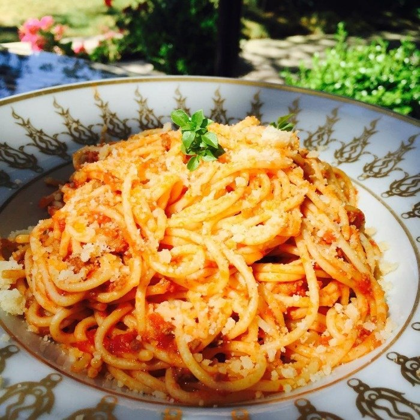
Classic Spaghetti Carbonara
Inspired by Gennaro Contaldo
Vital Theory is the recipe ebook packed with 200 chef-inspired recipes — from Gordon Ramsay's Beef Wellington to Julia Child's crème brûlée — with clear steps, quick prep times, and a photo for every dish.
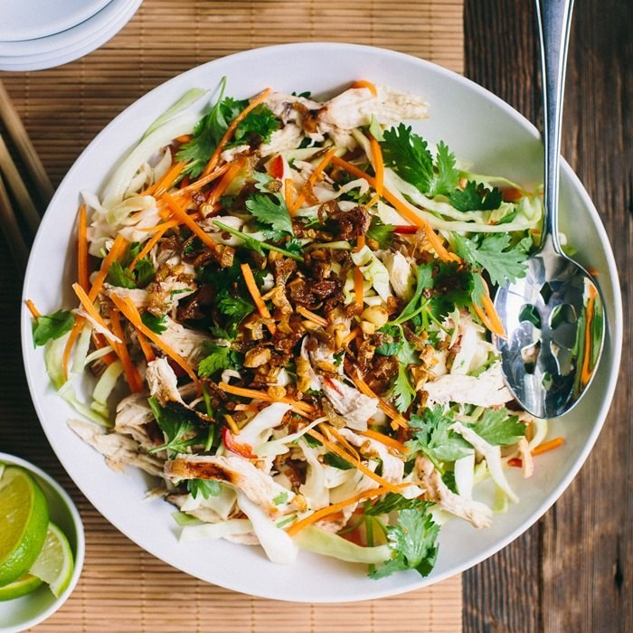
</> Drag to rotate · click to openEvery recipe is kitchen-tested, ingredient-friendly, and built for real weeknights — most on the table in 30 minutes.
No hard-to-find ingredients, no fancy equipment, no 40-step recipes. Vital Theory gives you flavor-packed meals you'll actually make again — with clear instructions anyone can follow.
200 recipes inspired by the world's most-loved chefs — a standout dish waiting in every chapter.

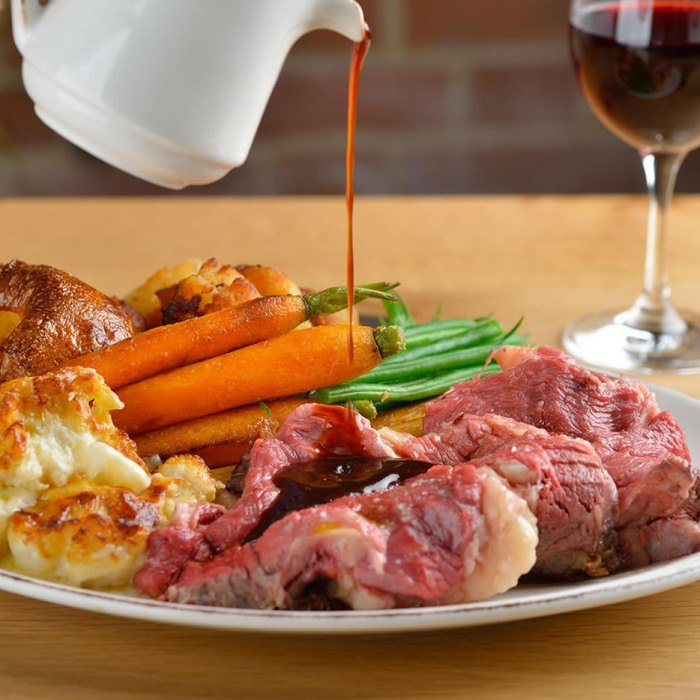
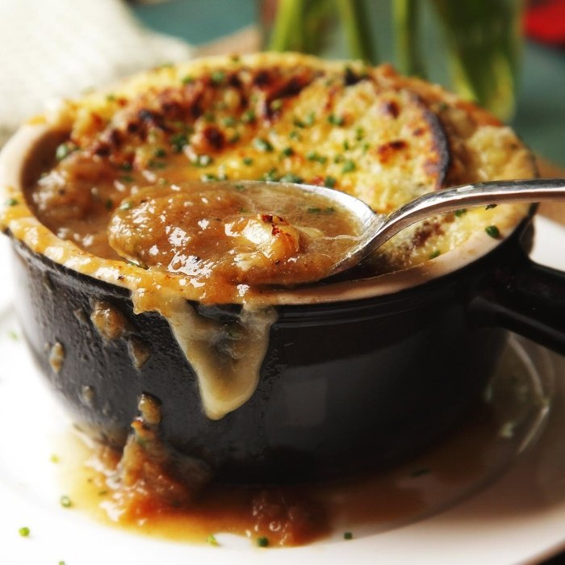
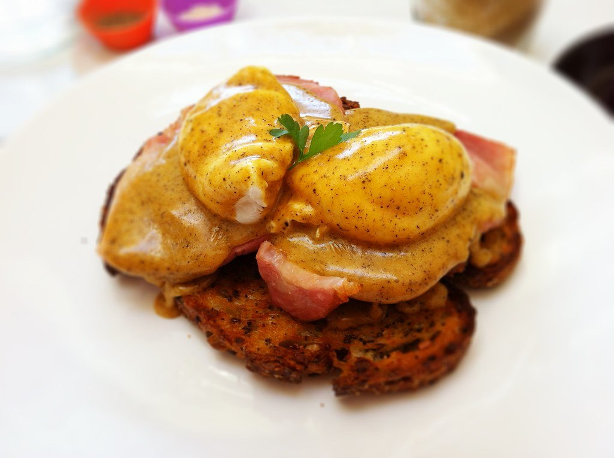
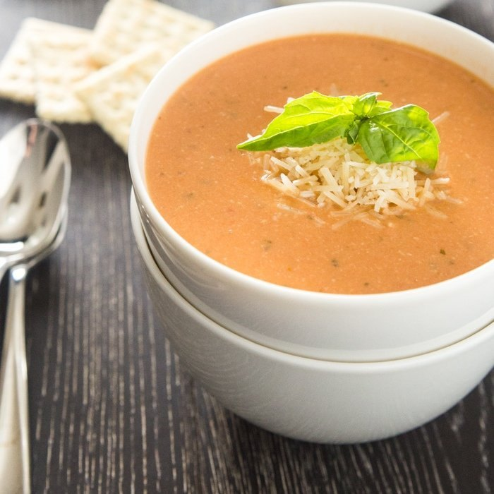
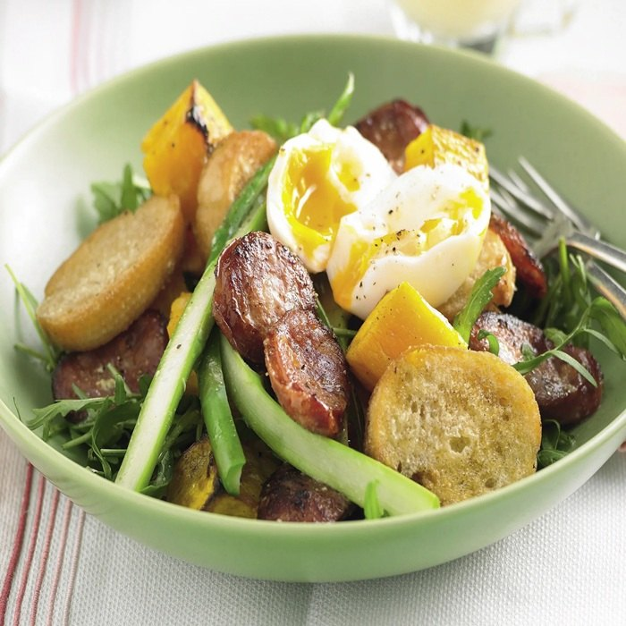
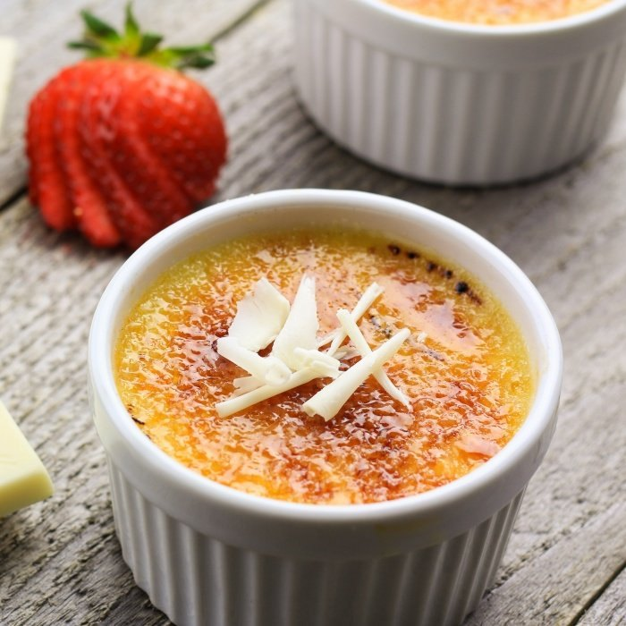
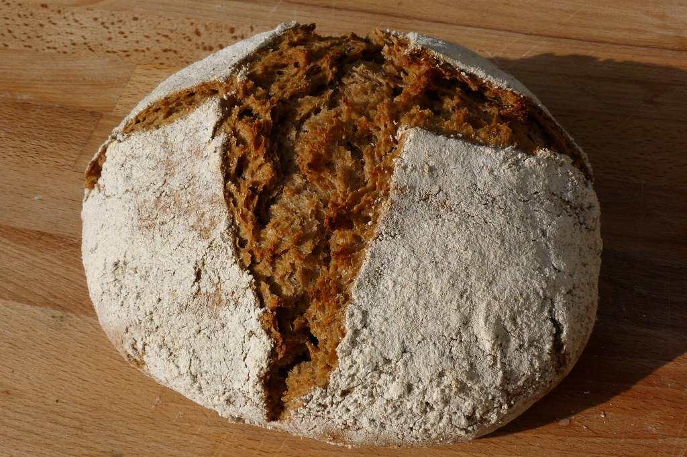
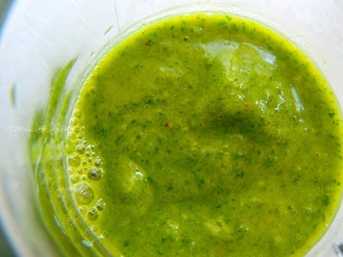
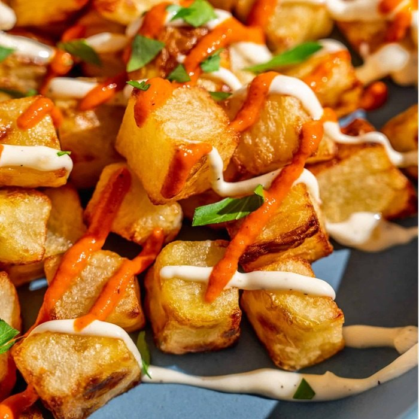
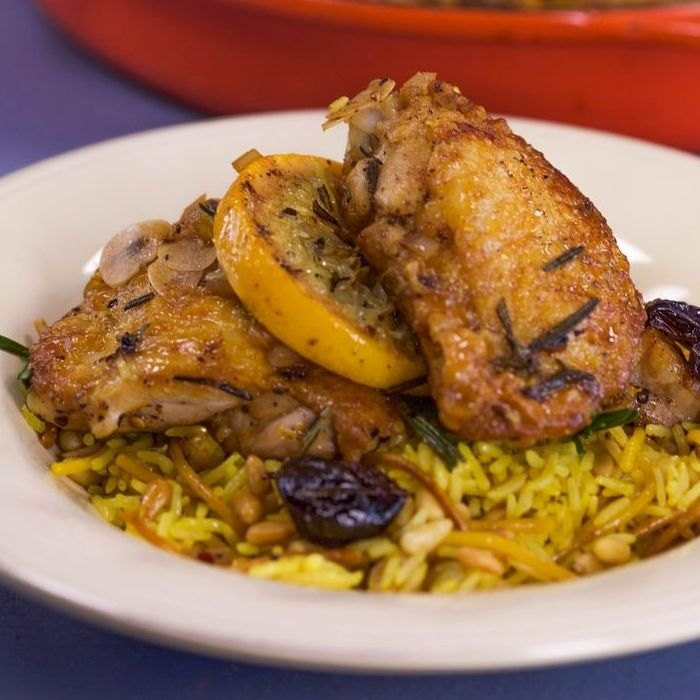
Less stress, less waste, and dinner you're genuinely proud of.
Skip the "what's for dinner?" spiral with quick, organized recipes and smart prep tips.
Budget-friendly ingredients and clever leftovers mean more meals for less money.
Clear, foolproof steps turn kitchen anxiety into meals you'll be proud to serve.
Three showstoppers from inside the cookbook — the same clarity runs through all 200.

A center-cut fillet wrapped in mushroom duxelles, prosciutto and golden puff pastry that carves into rosy slices. Inspired by Gordon Ramsay.
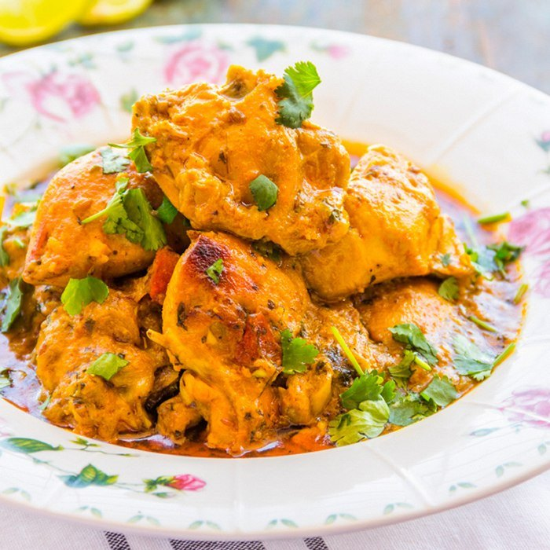
Yogurt-marinated chicken charred and simmered in a creamy, spiced tomato sauce. Inspired by Madhur Jaffrey.

Silky vanilla custard under a crackly, torched caramel top — the timeless French finale. Inspired by Julia Child.
Real words from people who put these recipes on the table.
"Every recipe I've tried has been a hit with my family. The instructions are so clear I never second-guess myself anymore."
"The honey garlic chicken is now a weekly staple. Restaurant-quality dinner in half an hour — my kids ask for it constantly."
"Finally a cookbook with no fluff — just great food that actually works. Best $10 I've spent on my kitchen this year."
No subscriptions, no upsells. Pay once, cook forever.
The complete Vital Theory cookbook + lifetime updates
Your purchase includes PDF (great on any device or for printing), ePub (Apple Books & most e-readers), and a Kindle-optimized file. Download them all instantly after checkout.
Right after checkout you'll get an instant download link plus a copy by email. No waiting, no shipping — start cooking tonight.
Not at all. Every recipe uses simple pantry ingredients and clear, numbered steps. Most are on the table in 30 minutes and are written for cooks of any level.
Yes. Payments are processed securely through Gumroad with encrypted, PCI-compliant checkout. Your card details are entered directly with Gumroad and never stored on our site.
You're covered by a 30-day money-back guarantee. If the cookbook isn't a fit, email us for a full refund — no questions asked.
Join hundreds of home cooks who swapped takeout for meals they're proud of. Get instant access to Vital Theory today for just $9.99.
Get the Cookbook Now →